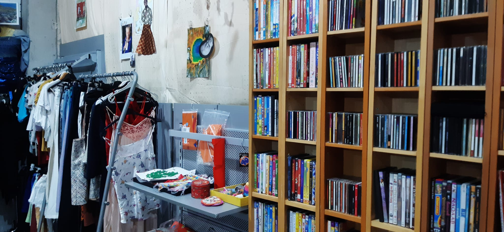

Inleveren
Waarom?
Als je jouw spullen/kleding inlevert kan iemand anders het een nieuw leven geven. Zo help jij een steentje bij! Ook is het milieu bewust, omdat er zo geen nieuwe spullen gekocht worden. De mensen die meestal tweedehands spullen/kleding gebruiken en kopen hebben het meestal moeilijk en niet veel geld om uit te geven. Deze spullen/kleding zijn een stuk goedkoper en daardoor betaalbaar voor ze.
Dus lever je spullen in!
Weggeefwinkel
Heb je thuis nog spullen/kleding liggen die nog goed zijn, maar je eigenlijk van af wilt. Breng ze dan naar de weggeefwinkel! Zo kan iemand anders het weer een 2e leven geven. In deze winkel kunnen andere mensen het dan ophalen, je hoeft er niks voor te betalen. Alleen kunnen er geen grote meubels worden gebracht.

Textielcontainers
Het ingeleverde textiel/kleding kan hergebruikt worden door anderen. Een deel hiervan wordt naar verschillende kringloopwinkels gebracht en er gaat ook een deel naar mensen die het nodig hebben in het buitenland.
Dus als je in de buurt woont van zo’n container en je hebt kleding die je niet meer wil, breng het naar de textiel container!
Vind deze containers